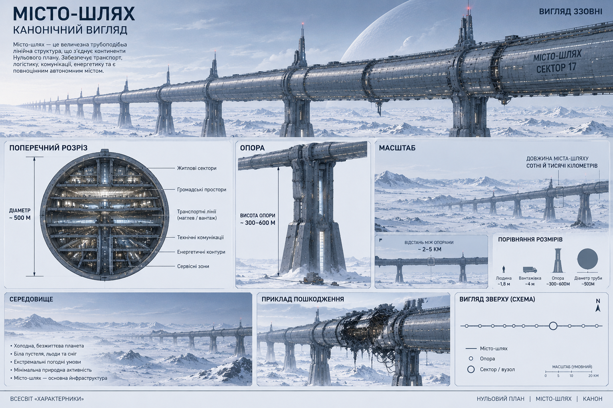

Транспорт
Центральні транспортні магістралі та монорейкові системи забезпечують переміщення людей і вантажів між віддаленими секторами.
ТЕХНОЛОГІЇ · ЦИВІЛЬНА ІНФРАСТРУКТУРА
Гігантська протяжна інфраструктура, що поєднує житлові, транспортні, виробничі, енергетичні та захисні системи в єдину автономну мережу.

КОНЦЕПЦІЯ
Місто-шлях — це не звичайне місто, а величезна протяжна інфраструктурна система. У світі після глобальної катастрофи такі споруди стали одним із основних способів зберегти людське життя та цивілізацію.
Конструкція може проходити через величезні території, перетинати материки й океани та об'єднувати віддалені людські поселення. У книгах описані міста-шляхи довжиною в сотні й тисячі кілометрів.
КОНСТРУКЦІЯ
Основою міста-шляху є масивна трубоподібна конструкція, піднята над поверхнею на великих опорах. У поперечному перерізі вона нагадує овальну трубу. Усередині розміщуються різні функціональні рівні та сектори.
Центральні транспортні магістралі та монорейкові системи забезпечують переміщення людей і вантажів між віддаленими секторами.
Усередині конструкції розташовані житлові квартали, де люди можуть постійно проживати незалежно від умов на поверхні.
Виробничі відсіки дозволяють підтримувати роботу міста та відновлювати пошкоджену інфраструктуру.
Енергетичні станції та внутрішні мережі забезпечують роботу житлових, технічних і виробничих систем.
ВНУТРІШНЯ ІНФРАСТРУКТУРА
Місто-шлях спроєктоване так, щоб велика кількість його функцій могла працювати всередині самої конструкції. Окрім житла та транспорту, тут розміщуються лабораторії, технічні приміщення, енергетичні системи та інші об'єкти, необхідні для життя й роботи людей.
ЗАХИСТ
Міста-шляхи створювалися в умовах, коли звичайна міська інфраструктура вже не могла гарантувати безпеку населення. Тому конструкція та системи захисту розраховані на надзвичайно важкі умови.
У книгах зазначено, що міста-шляхи могли витримати навіть непрямий ядерний вибух. Система моніторингу контролювала навколишній простір на значній відстані, а сама інфраструктура мала активні оборонні комплекси.
Ракетні, гарматні, кулеметні та інші оборонні системи, а також безліч дронів.
Постійний контроль навколишнього простору та раннє виявлення загроз.
ПЕРЕВАГА ПРОТЯЖНОЇ КОНСТРУКЦІЇ
Однією з головних переваг міста-шляху є його довжина. Після глобальної війни окремі ділянки могли бути пошкоджені або зруйновані, але інші секції залишалися придатними для життя.
Саме це дозволило людям збиратися у вцілілих частинах інфраструктури та поступово відновлювати її. Місто-шлях фактично перетворилося на розподілену систему виживання, де втрата одного сектора не означала втрату всієї конструкції.
ПЕРЕНЕСЕННЯ МІЖ ПЛАНАМИ
Міста Нульового плану можуть бути перенесені на інший План. Але це не означає, що будь-яке місто переміщується одним і тим самим способом. Спосіб перенесення залежить від типу міста, його конструкції та підготовленого на новому Плані місця.
Окремий випадок становлять підземні міста. Вони не переносяться як наземна конструкція, яку можна послідовно перемістити вздовж її довжини. На іншому Плані заздалегідь готують відповідну підземну порожнину, після чого вже готове місто фізично переміщується до підготовленого простору разом із мешканцями.
Тому технологія перенесення підземного міста є окремою операцією і не повинна ототожнюватися з іншими способами переміщення інфраструктури між Планами.
КАНОН
Місто-шлях — одна з ключових технологій цивілізації Нульового плану. Воно стало відповіддю людства на ядерну зиму, руйнування звичайних міст та постійну загрозу знищення.
Це не окрема будівля, а масштабна інфраструктурна система, у якій транспорт, житло, виробництво, енергетика, наука та оборона працюють як єдиний комплекс.